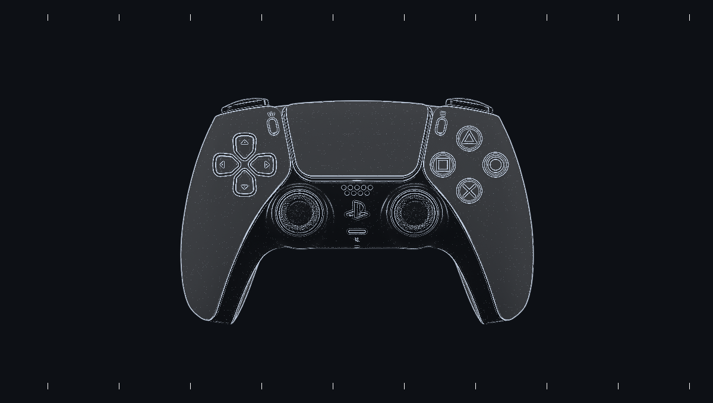
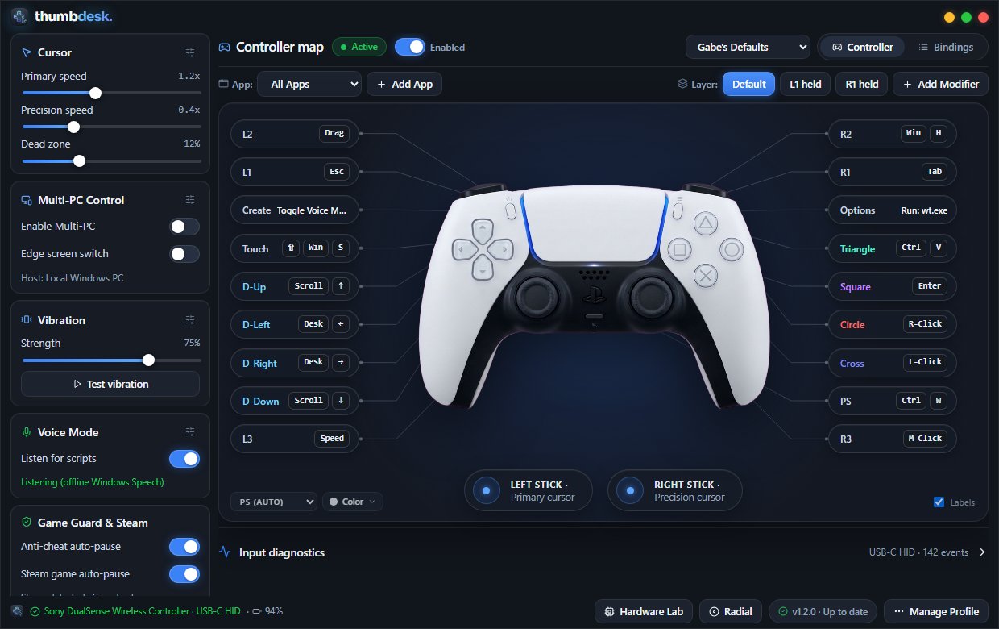
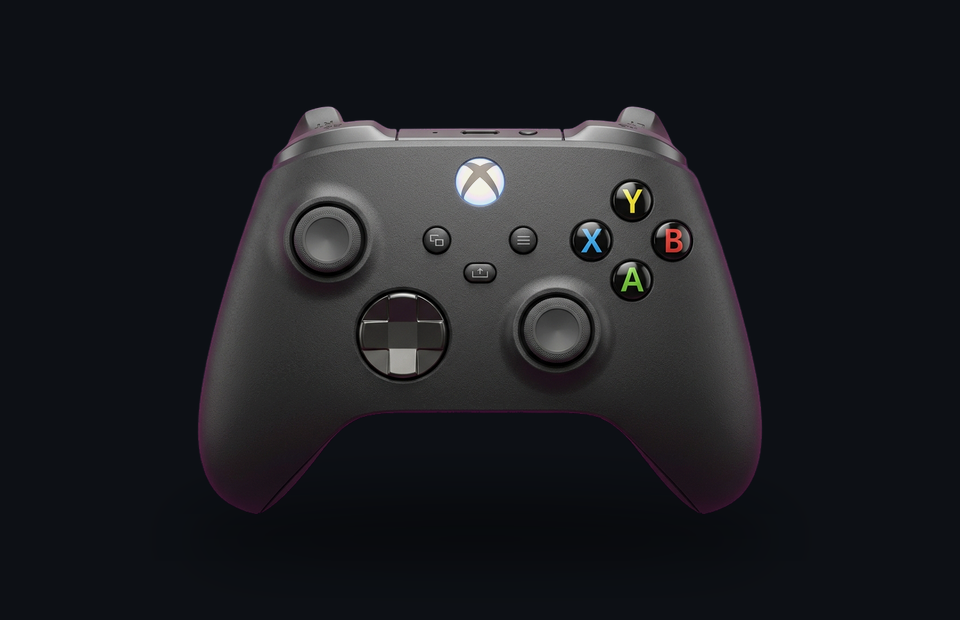

L1 / R1 MODIFIER LAYERS
120 HZ PRIMARY STICK
DIRECT USB / BT HID
RUN ANY SHELL / .BAT
PRECISION 0.4× CURSOR
DUAL-MOTOR LOCALITY
EXHIBITION 01 / INPUT PHYSICS
Precision Cursor Response & Flick Boost
Radial deadzone normalization, exponential response curve, frame-rate independent smoothing, and 2.0× flick throw decay.
VELOCITY CURVE · DEFLECTION (0–100%) VS PX/S
DEFLECTION 65% → 1,412 px/s
CURSOR ENGINE CONSTANTSRUST / WIN32
| Polling cadence | 120 Hz fixed-step accumulator |
| Radial deadzone | 12% default (configurable 2%–35%) |
| Acceleration | 1 + c² × 0.35 non-linear scaling |
| Flick boost | 2.0× throw (<40 ms) · 2.0 s linear decay |
| Cross-edge sweep | 6,000 px/s · 1,500 px multi-monitor jump |
| Subpixel precision | Remainder accumulator (zero drift) |
| Input injection | Native Win32 SendInput (zero drivers) |
EXHIBITION 02 / HARDWARE FEEDBACK
Dual-Motor Haptic Signal Path
Independent left/right eccentric motor routing across XInput and Direct USB/BT HID packets.
SIGNAL TOPOLOGY · HID / XINPUT7 WAVEFORMS
LOCALITY: LEFT · RIGHT · HANDLES
PATTERNS: SOFT · DOUBLE · THUMP · GRAB & RELEASE
VOICE SCRIPT & GAME GUARD PIPELINEREALTIME
[voice] System.Speech (offline) listening
[voice] heard "open terminal" → exec wt.exe
[button] Options → cmd /C "code ." (silent)
[guard] scan: vgtray.exe (Riot Vanguard)
[guard] SendInput SUSPENDED · compliant
[steam] steam://settings/controller ready
[update] v1.2.0 preloaded · SHA-256 verified
EXHIBITION 03 / STUDIO INTERFACE
Real Desktop Application & Live Walkthrough
Frameless obsidian workspace with live button telemetry, modifier layers, script editor, and built-in preloaded updater.

REAL APP CAPTURE · 1240×780
DUALSENSE USB-C HID

5-SCENE FEATURE REEL
LAYERS · XBOX · SCRIPTS · UPDATER
EXHIBITION 04 / HARDWARE & SPECIFICATIONS
Dynamic Controller Hot-Swap
Plug in DualSense, DualShock 4, or Xbox Series X|S — hardware artwork, button labels, hotspots, and rumble protocols switch automatically.

SONY DUALSENSE & DUALSHOCK 4
DIRECT HID · TOUCHPAD CLICK

XBOX 360 / ONE / SERIES X|S
NATIVE XINPUT · BATTERY TELEMETRY
RUNTIME & COMPATIBILITYSYSTEM
| Operating System | Windows 10 / 11 (64-bit) |
| Core Runtime | Rust + Tauri v2 + React 19 |
| Distribution | Single portable ThumbDesk.exe (no drivers) |
| Auto-Updater | Background preload + SHA-256 + atomic swap |
| Multi-PC Handoff | LAN NDJSON v2 over TCP + UDP discovery |
ANTI-CHEAT & STEAM GUARDCOMPLIANCE
| Kernel Anti-Cheats | Vanguard, EAC, BattlEye, FACEIT, Ricochet, EA |
| Guard Action | Instant suspension of all synthetic SendInput |
| Steam Detection | Auto-pause when \steamapps\common\ focused |
| Steam Launchers | One-click Steam Input & Big Picture URIs |
| Profile Import | Atomic JSON + macOS GAPE.json auto-convert |
EXHIBITION 05 / PREMIER SUITE CAPABILITIES (v2.0.0)
Built for Desktop Productivity & Next-Gen Hardware
Shipped natively in v2.0.0 — zero external drivers, zero cloud dependencies, 100% local Rust + Win32.
01 · SENSORS & HARDWARE FX
6-Axis Gyro & Adaptive Triggers
- DualSense / DS4 IMU gyro mouse with touchpad activation
- DualSense L2/R2 adaptive trigger detents & dual-stage walls
- Dynamic Lightbar RGB telemetry (Active / Guard / Voice)
02 · OVERLAYS & DESKTOP CONTROL
Radial Wheel & Window Tiling
- 8-slice obsidian thumbstick radial pie menu
- Native Window Snap Left/Right, Maximize & Next Monitor
- Media Play/Pause, Track Skip & System Volume controls
03 · DIAGNOSTICS & AUTOMATION
Calibration Lab & Local API
- Live dual-stick circularity & center-drift polar canvas
- Real-time polling-rate & IMU telemetry monitor
- Localhost HTTP API (127.0.0.1:49152) for OBS & Stream Deck